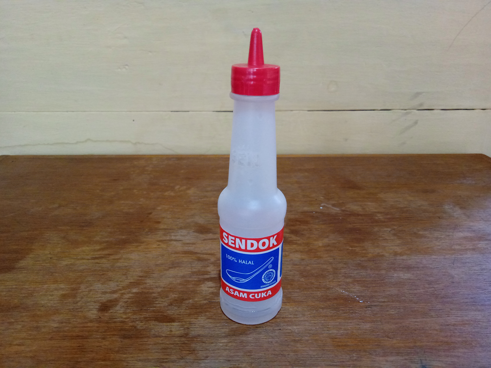
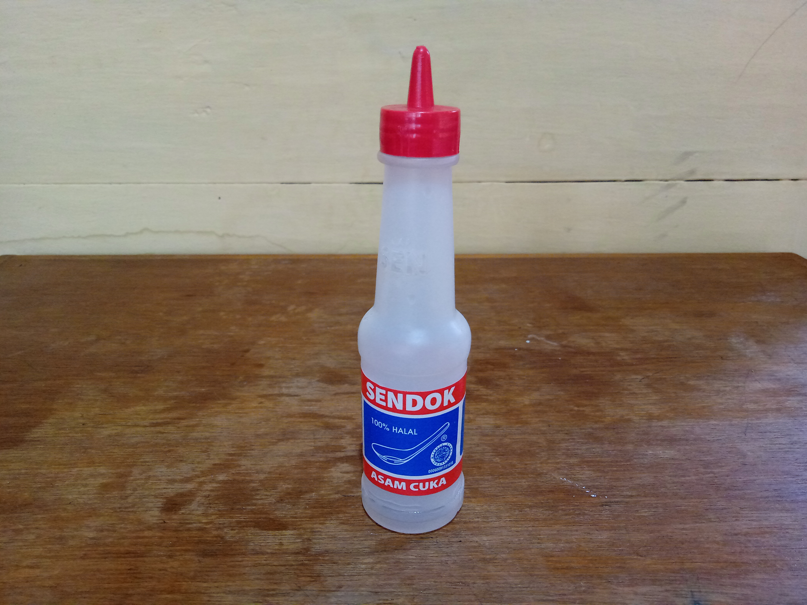

Klasifikasi Materi dan Perubahannya

Klasifikasi materi
1. Peserta didik dapat mengidentifikasi campuran yang bersifat asam dan basa menggunakan indikator alami
Mari mencoba
- Lakukan aktivitas ini secara individu
- Berhati-hatilah dalam melakukan percobaan dan perhatikan keselamatan kerja.
- Setelah melakukan percobaan, hasil dari percobaan di foto dan ubah nama foto menjadi nama anda lalu unggah ke dalam kolom yang tersedia
- Setelah selesai mengunggah foto, anda diminta untuk menjawab pertanyaan
- Pada pertanyaan anda diminta memilih jawaban yang benar dari pilihan jawaban yang ada
- Jika jawaban anda benar, maka kotak pilihan akan berubah warna hijau dan disertai pembahasan pertanyaan
- Jika jawaban anda salah, maka kotak pilihan akan berubah warna merah dan akan tampil tombol "ulang"
- Silahkan tekan tombol "ulang" untuk kembali menjawab pertanyaan
Tujuan: Mengidentifikasi sifat dari larutan dengan menggunakan indikator alami.
Alat dan bahan:

 

(Kunyit)
(Tiga gelas berisi air hangat)
(Cuka)


(Deterjen)
(Cobek dan ulekan)
(Sendok)
Langkah kerja:
- Tuangkan air hangat ke dalam tiga buah gelas kaca
Berhati-hatilah dalam menuangkan air hangat. Tuangkan secukupnya secara perlahan. - Siapkan indikator alami yaitu kunyit dengan cara menghaluskan kunyit menggunakan cobek dan ulekan
- Campurkan kunyit yang telah dihaluskan ke dalam sebuah gelas kaca yang berisi air hangat
- Selanjutnya aduklah campuran kunyit dan air hangat sampai merata menggunakan sendok
- Setelah membuat indikator buatan, siapkan larutan yang akan di uji coba
- Campurkan bahan-bahan yang akan di uji coba diantaranya, campurankan cuka ke dalam sebuah gelas yang berisi air hangat dan campurkan deterjen dengan air hangat
- Selanjutnya aduk sampai merata menggunakan sendok
- Setelah semua bahan sudah siap, tuangkan secukupnya campuran ekstrak kunyit ke dalam setiap larutan
- Setelah dicampurkan pada setiap larutan yang di uji coba, aduk sampai merata menggunakan sendok
- Setelah 5 menit, perhatikan perubahan warna yang terjadi pada setiap larutan yang di uji coba
- Setelah terjadi perubahan warna, ambilah foto dari kedua larutan tersebut
- Silahkan unggah foto dari hasil uji coba larutan, ubah nama foto dengan nama penguji (nama siswa).
Contoh Widodo Setio Sejati.png / widodo setio sejati.jpg
*Tekan 'Pilih foto' untuk memilih gambar yang ingin diunggah
*Tekan 'Unggah foto' untuk mengunggah foto
1. Dibawah ini yang merupakan sifat dari larutan cuka berdasarkan perubahan warna yang terjadi adalah ...
- Larutan cuka bersifat asam karena berubah warna menjadi kuning
- Larutan cuka bersifat basa karena berubah warna menjadi merah
- Larutan cuka bersifat garam karena berubah warna menjadi hijau
- Larutan cuka tidak memiliki sifat karena berubah warna menjadi putih
Pembahasan:
Ketika larutan cuka yang awalnya berwarna bening atau putih dicampurkan dengan ekstrak kunyit, warna dari larutan cuka berubah menjadi warna kuning. Berdasarkan perubahan warna yang terjadi sifat dari larutan cuka adalah asam.
2. Dibawah ini yang merupakan sifat dari larutan deterjen berdasarkan perubahan warna yang terjadi adalah ...
- Larutan deterjen bersifat asam karena berubah warna menjadi kuning
- Larutan deterjen bersifat basa karena berubah warna menjadi merah
- Larutan deterjen bersifat garam karena berubah warna menjadi hijau
- Larutan deterjen tidak memiliki sifat karena berubah warna menjadi putih
Pembahasan:
Ketika larutan deterjen yang awalnya berwarna kebiruan dicampurkan dengan ekstrak kunyit, warna dari larutan deterjen berubah menjadi warna merah. Berdasarkan perubahan warna yang terjadi sifat dari larutan deterjen adalah basa.
*Jawaban anda masih belum benar!
*Silahkan membaca bahan bacaan dibawah ini.
Penjelasan
Cara untuk dapat mengidentifikasi sifat larutan menggunakan indikator alami adalah dengan cara mencampurkan ekstrak dari tumbuhan ke dalam larutan yang ingin diidentifikasikan. Ketika dicampurkan dengan indikator buatan, campuran atau larutan akan mengalami perubahan warna. Berikut adalah perubahan warna yang terjadi ketika indikator alami dicampurkan dengan larutan yang ingin di uji coba:
| Ekstrak | Perubahan warna pada larutan | |
|---|---|---|
| Asam | Basa | |
| Kunyit | Kuning | Jingga / merah |
| Kulit manggis | Merah tua | Kuning |
| Bunga sepatu | Merah muda | Hijau |
| Bunga mawar | Merah muda | Hijau |
*Tekan tombol "Selanjutnya" pada navigasi bagian bawah untuk melanjutkan pembelajaran.